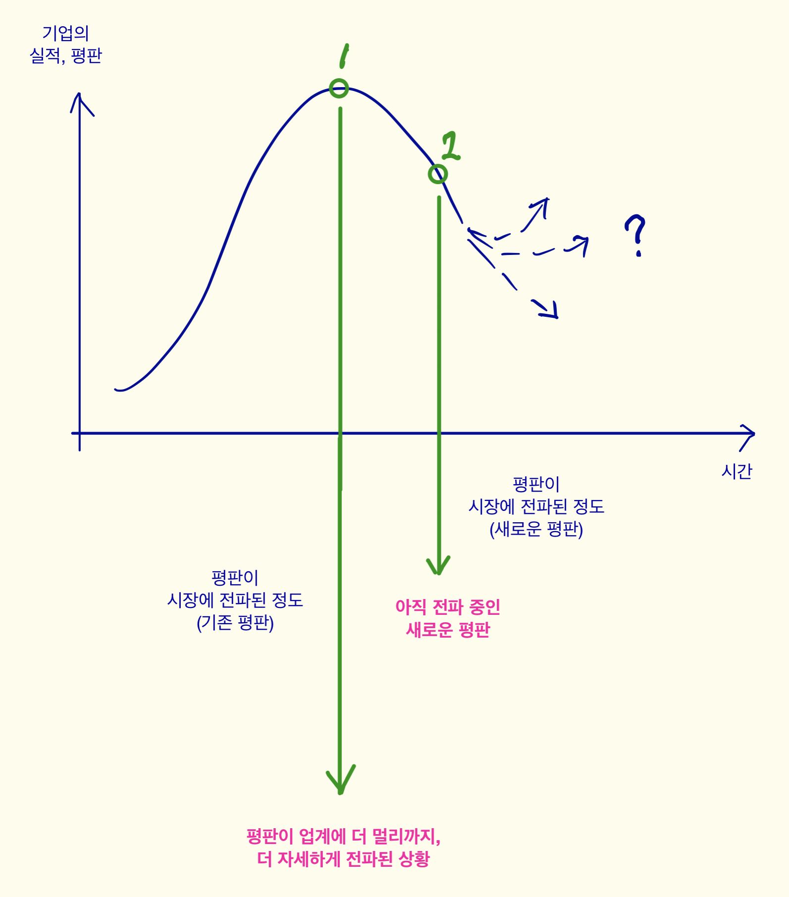

3. 잠재 이직자가 마주할 수 있는 변화들
이직 타이밍의 순환 주기
- 이직은 회사의 명성에 크게 영향을 받는다.- 어느 회사의 명성은 업계에서 시간을 두고 차츰 전파되는 경향이 있다.
- 이런 시차가 존재한다고 할 때, 이론적으로 '회사의 실적이 최고'일 때를 조금 지난 시점이 개인이 가장 좋은 조건으로 이직할 수 있는 타이밍이다.
- 이 타이밍으로부터 시간이 흐르면서 만일 조금씩 '업계 평판'이 나빠진다면, 개인은 더 좋은 조건으로 이직할 수 있는 기회를 놓치고 있는 셈이다.
- 만일 향후 기업의 실적이 크게 개선되지 않는다면 업계의 평판은 꾸준히 하향될 수 있다. 이는 잠재 이직자에게는 좋은 소식이 아니다.

이직 시 스타트업 직원을 보는 시선
[약점]- 체계적이고 전문화된 직무 능력을 갖추고 있지 않다.
- 풍부한 업무 경험을 갖추고 있지 않다.
[강점]
- 성공적인 스타트업의 노하우를 알고 있을 것이다.
- 필요하면 여러가지 업무를 두루 맡아서 할 수 있을 것이다.
결국 스타트업에서의 이직 시 경쟁력은 '체계화된 업무 능력' 같은 것보다는,
'성공적인 스타트업의 노하우'를 얼마나 체득하고 있는지, 그것을 새 회사에서 써먹을 수 있는지이다.